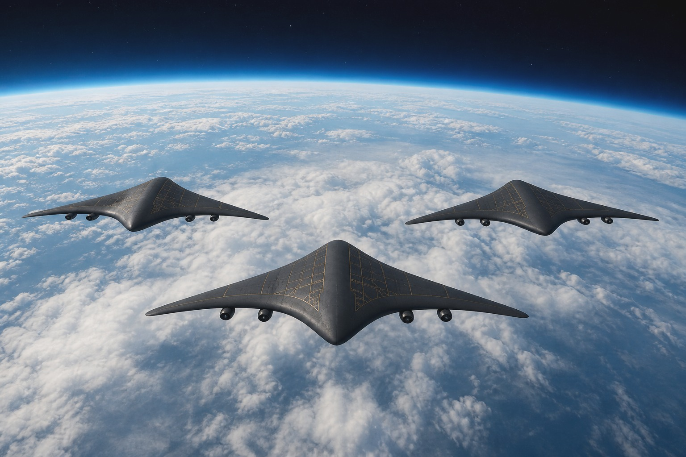

Planning estimates for discussion with qualified parties. Not guarantees of future performance. Not an offer to sell securities.
1. Executive summary
TITAN-X is a free-flight stratospheric aerostat with a 20,000 lb modular payload, indefinite endurance on helium buoyancy and solar power, and mission reconfiguration by swapping gondolas and underbelly modules.
Investment thesis: fund pathfinder → first full-scale hull → California firefighting + metro nodes → planning 12-unit fleet by 2030. Pre-positioning converts response from days to hours; civil and commercial utilization underwrites year-round availability; dual-use configs share one cost base.
2. Platform at a glance
| Parameter | Value | Notes |
|---|---|---|
| Size | 480 ft × 200 ft | Swept manta planform |
| Net payload | 20,000 lbs | ≈ school-bus weight |
| Altitude range | 500 – 130,000 ft | Tree-top to lower stratosphere |
| Endurance | Indefinite | Solar + buoyancy |
| Ops carbon (persistent) | Near-zero | No combustion for loiter |
| Architecture | Fully modular | Gondola / underbelly swap |
- Rockoon loft to ~100,000 ft for propellant savings, then recover the platform
- Civil, commercial, and defense requirements share the same platform and cost base

3. Problem & solution
Wildfire and disaster response still depends on scarce surge aircraft. Satellites persist but cannot deliver mass. Cities need hours-scale airborne nodes for observation, temporary communications, and logistics.
TITAN-X fills the band between aircraft and satellites: indefinite loiter, school-bus-class modular payload, near-zero persistent ops carbon, and pre-positioned regional coverage instead of surge-only response.
4. Regional deployment
Major cities & high-value regions
One TITAN-X (or a pair) per region, loaded with modular response packages, on station in hours — disaster response, communications restoration, observation, logistics.
California firefighting concentration
- Fire-behavior, thermal, and smoke-plume sensors
- Retardant or water delivery modules
- Incident command and communications packages
- Decision-support for incident commanders
Modules shift to other missions in lower-risk periods to preserve utilization.
Smaller complementary platforms
Secondary observation, relay, weather, and lower-cost coverage under full-size regional nodes.
5. Customers & missions
| Segment | Use |
|---|---|
| State / regional wildfire authorities | CA firefighting concentration |
| Metro & high-value regions | Persistent disaster & comms nodes |
| Critical infrastructure | Monitoring and logistics support |
| Maritime / shipping | Domain awareness and ship support |
| Public safety | Airborne threat awareness (low-cost drones) |
| Science / weather | High-altitude observation |
| Rockoon / launch customers | Stratospheric loft + recover |
| Dual-use / defense (selected) | ISR, relay, forward logistics, responsive access |
6. Unit economics
| Item | Planning value |
|---|---|
| Unit CAPEX (fleet volume) | $13.0M |
| 12-unit fleet CAPEX | $156M |
| Annual OPEX per unit | $2.4M |
| Break-even utilization | ~$200K / month |
| Mature utilization target (base) | $8–12M / unit / year |
| Contribution at $10M rev / $2.4M opex | ~$7.6M / unit / year |
Illustrative mature revenue mix
| Stream | Share |
|---|---|
| Regional standby / availability | 35–45% |
| Wildfire / disaster mission fees | 20–30% |
| Infrastructure / maritime / public safety | 15–25% |
| Rockoon / science / specialty | 5–15% |
| Dual-use / defense options | 0–20% |
7. Financial plan 2026–2030
USD millions. Anchored to consolidated summary CAPEX / OPEX / break-even. The planning 17.8 : 1 ten-year fleet ROI is a long-horizon target on the stood-up fleet — not a 2030 cash guarantee.
Fleet build (base)
| 2026 | 2027 | 2028 | 2029 | 2030 | |
|---|---|---|---|---|---|
| Full-size units EOY | 0* | 1 | 3 | 6 | 12 |
| CA firefighting-primary | — | 1 | 2 | 3 | 4 |
| Metro / regional nodes | — | 0 | 1 | 3 | 8 |
*Pathfinder year — endurance, station-keeping, modular swap validation.
Capital expenditure (base, $M)
| 2026 | 2027 | 2028 | 2029 | 2030 | Total | |
|---|---|---|---|---|---|---|
| Pathfinder + engineering | 18 | 6 | 4 | 3 | 2 | 33 |
| Hull production (learning curve) | — | 18 | 30 | 42 | 78 | 168 |
| Ground / ops infrastructure | 4 | 6 | 8 | 10 | 12 | 40 |
| Total CAPEX | 22 | 30 | 42 | 55 | 92 | 241 |
Operating model (base, $M)
| 2026 | 2027 | 2028 | 2029 | 2030 | |
|---|---|---|---|---|---|
| Avg units in service | 0 | 0.5 | 2.0 | 4.5 | 9.0 |
| Revenue | 0.5 | 4 | 18 | 42 | 90 |
| Direct OPEX | 1.5 | 3.5 | 7 | 13 | 24 |
| Program / G&A | 4 | 5 | 7 | 9 | 11 |
| EBITDA (planning) | (5.0) | (4.5) | 4 | 20 | 55 |
2030 check: ~$90M revenue on ~9 average units ≈ $10M per unit-year, above the $2.4M OPEX break-even.
Scenario fan — 2030
| Case | Units | Revenue | EBITDA |
|---|---|---|---|
| Conservative | 6 | $45M | $18M |
| Base | 12 | $90M | $55M |
| Upside | 12+ | $130M | $85M |
8. Use of funds & milestones
| Use | Share |
|---|---|
| Pathfinder + first full-scale hull | 35–45% |
| CA firefighting + first metro modules | 20–30% |
| Production tooling / learning-curve | 15–20% |
| Ops bases, helium, insurance, crew | 10–15% |
| Corporate / BD / compliance | 5–10% |
Gate heavy fleet CAPEX on endurance demo, modular swap demo, and first paid availability or mission contract.
9. Risks
- Airworthiness / airspace — pathfinder before fleet claims
- Early unit cost above $13M volume target — learning-curve modeled explicitly
- Public contracting cycles — civil commercial utilization underwrites standby
- 17.8 : 1 ROI is a planning ten-year fleet figure, not a 2026–2030 guarantee
10. The ask
We are engaging venture capitalists and business owners to fund or co-develop:
- Pathfinder validation and first full-scale hull
- California firefighting concentration as the first revenue-bearing mission stack
- Metro pre-positioning nodes that turn TITAN-X into infrastructure
Bottom line. Indefinite endurance. 20,000 lb modular payload. Near-zero persistent ops carbon. Pre-positioned regional coverage with a California firefighting emphasis. Dual-use economics on one hull family. 2026–2030 builds the twelve-unit base; utilization after that is where the summary ROI lives.